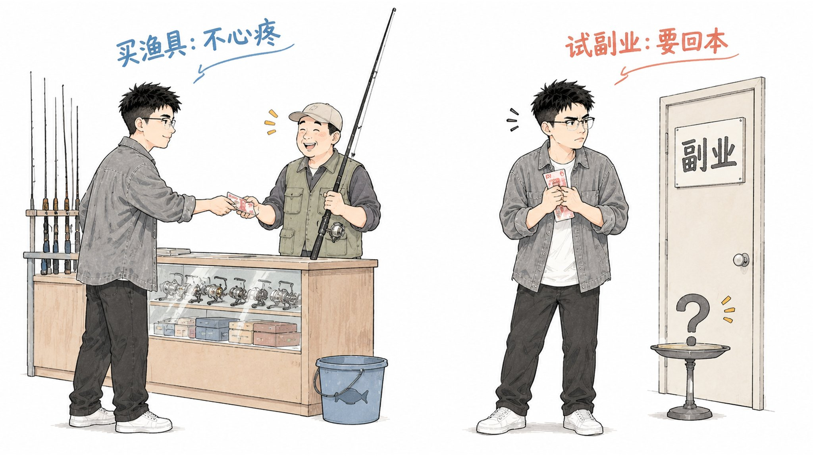
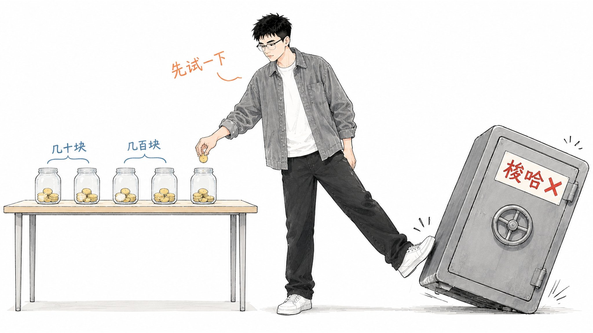
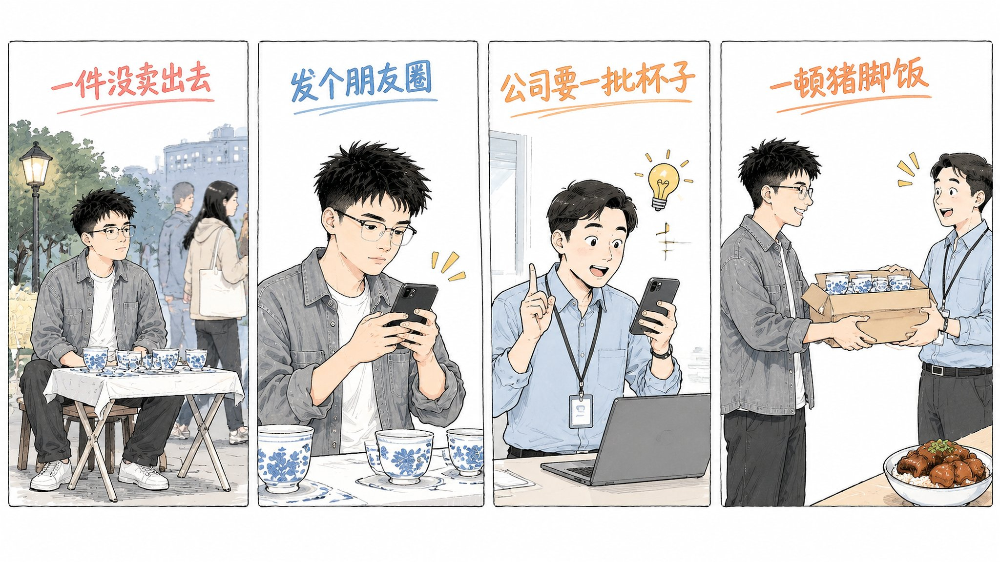
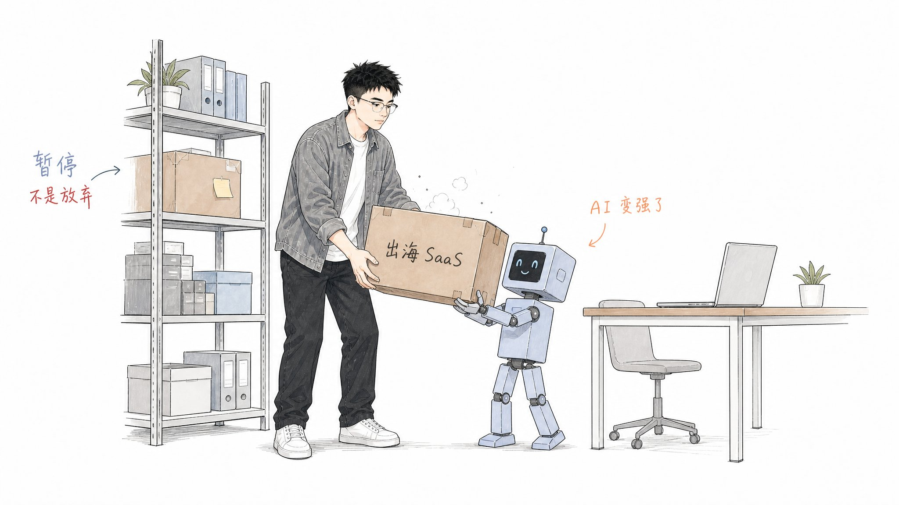

最近跟身边的人聊得最多的，就是搞钱这件事。
不管是私下聊天，还是去参加线下分享，我经常被问到这几个问题：你哪来这么多精力？你是怎么找到搞钱项目的？我们怎么就找不到？
还有一些朋友，天天说自己想搞钱、想做副业，但真正动手的并不多。
所以我特别想写一篇文章，聊聊我是怎么看搞钱这件事的，以及一直以来我自己是怎么做的。
先说一个可能有点出乎意料的事实。大家看到的是我和乌云做中转站做成了，但我没做成的事，比做成的多得多。
刚毕业上班那会儿，下班去公园摆摊卖陶瓷，一件没卖出去。做过代充，最后只卖给了身边几个人。做过抖音短视频，没什么播放。做过抖音电商，从 1688 进货到抖店上架的流程全摸了一遍，最后还是搞不来流量。研究过跨境独立站，算完成本就没敢做。出海 SaaS 前后花了 1000 块左右，停了。
这么多事里，真正做成的只有一两件。
但我从来没觉得那些钱和时间白花了。因为我一直把搞钱当成一种兴趣。
你问我哪来的精力、项目怎么找，我的答案其实都在这句话里。
一. 为什么天天说搞钱，却一直不动
为什么很多人说了很久，却一直没动？
我的理解是，大家把搞钱当成了一件必须回本的事。还没开始，就先问这笔钱能不能赚回来、这段时间会不会白费。每一笔投入都要求有回报，最后一笔都不敢花。
可你看那些有爱好的人。钓鱼佬买渔具，从来不问钓上来的鱼值不值这个钱。玩游戏的人，充个首充眼睛都不眨。没人要求爱好回本，花钱本来就是玩的一部分。

搞钱也可以这样。真把它当兴趣，你会自然地去找攻略，去研究别人怎么做的。看到别人有新玩法做成了，会忍不住想自己也试一下。愿意花时间，也愿意花一点钱入场。
我做中转站就是这么开始的。今年 3 月，乌云跟我说这块挺挣钱，我自己去了解，也发现确实挣钱。那就别想太多，他正在做，我就很积极的跟他说，我们可以一起做，然后帮他来解决一部分工作。然后就一路干到现在。具体怎么做的，我之前的帖子里拆过，这里不重复。
二. 当兴趣，不等于梭哈
当兴趣不是让你乱花钱。钓鱼佬第一次钓鱼，也不会直接买几万块的竿。
我的原则是小数试错。很多事明明可以先小投一点，看看行不行，再判断自己能不能干，没必要一上来就 all in。

我自己的标准大概是这样的：门槛要几万、几十万的事，我不会直接碰，得多了解以后才敢参与。副业这种，我愿意投几十、几百块先试一下。
我第一次试，就是摆摊。
那时候刚毕业，在东莞上班。家里在景德镇，认识一些做陶瓷的人，我就从他们那拿了一批便宜的瓷器，下班去公园摆摊。
说实话挺尴尬的，一开始根本不敢吆喝。后来逼着自己喊了几次，还是没人买。摆不下去，我就改成发朋友圈卖。
结果一个同事刷到了，来问我。正好他朋友公司要采购一批杯子，就顺手走了我这边。一来一回，前面亏了 200 多，这单赚回来一两百，算下来也就一顿猪脚饭的钱。

钱没赚到什么，但我记住了一件事：你不去做，连这一单都不会有。人家是看到你在做，机会才会找上门。
后来试得多了，我又发现投入其实分两种。
- 花钱的事：先想清楚这笔钱全亏了自己能不能接受，成本能控制在多少。如果是投一大笔钱、指望短期回报的，金额一定要压住。
- 花时间的事：钱投得少，主要耗精力，这种可以做得长一点，比如说自媒体。
事情本身也分两种。短期的事，试一下不行就跑。长期的事，你得接受很长一段时间没有正反馈。只花时间、不怎么花钱的事，一般都要往长了做。
三. 什么时候该停：先问自己能不能干
试错最难的不是开始，是判断什么时候停。
我的第一个问题永远是：这件事，我现在能不能干？
抖音短视频是我停得最干脆的一个。原因就两个。一是时间精力跟不上，我当时还在上班。二是剪辑成本太高，要花大量时间去学剪辑，学完也不一定有播放，投入产出比算不过来。
抖音电商是我试得最费劲的一次。研究了各种投流广告，把从拼多多、1688 进货，再到抖店上架的整套流程都摸清楚了。但流量就是搞不来，正反馈特别慢。我找了一堆教程去学，越学越懵，最后实在放弃了。
跨境独立站，我是研究完就没做。成本太高，以我当时的情况扛不住。
但这也算一次试错，而且几乎零成本。花几天把一件事研究清楚，然后决定不做，这也是一个结果。
四. 很多失败，是我判断错了
回头看，我很多没做成的事，不一定是事情不行，而是我当时判断错了。
出海 SaaS 第一次停下来，是因为我觉得投入产出比不够。要投大量精力，还要很长时间才可能有回报。当时我还有一个判断：好像也没什么人在这上面赚到钱。
后来深入了解才发现，赚钱的人有的是，只是他们没说出来而已。
代充是另一种错判。我错判了整个市场。这个需求其实更多在国内，而我做晚了，前期调研也没做好。真开始做的时候才发现，客户根本没想象的那么多。最后没亏钱，但也只挣了身边一些人的钱。
代充为什么只能卖给身边人？因为我没找到流量入口。
把这几件事放在一起看，代充、抖音电商、抖音短视频，都卡在了同一个地方：流量。反过来，中转站能做起来，很大一个原因是我和乌云在推特上都有一些粉丝，第一批用户很快就聚过来了。
所以现在我试任何一件事之前，都会先问一句：我的客户从哪来？流量入口始终是第一位的。
五. 停下来，不等于放弃
还有一点我觉得很重要。我停掉的很多事，不是不干了，是暂时不干。
从抖音到公众号，再到 X，就是这样一路换过来的。做视频精力跟不上，我就转去做文字。做了公众号，发现长文我也有点跟不过来，我更想写短的。正好那时候了解到出海，觉得机会可能更大，就到了 X。
出海 SaaS 也是。
我最近又把它捡起来了。因为我仔细想了想，当初没做成，最主要的原因是精力不足，不是这件事不能做。现在 AI 变强了很多，我一个人能干的事比以前多了不少。
所以我重新投了一些钱，把之前忘掉的东西一点点捡回来，继续干。

至于当初花掉的那 1000 块，买域名、买外链，现在回头看，这个试错成本真的不高。
写在最后
如果你也是一个想搞副业、但一直没动的打工人，我的建议是这样的。
第一，先筛一遍方向。看看别人已经做成的事里，哪些是你现在的条件能做的。
第二，给自己定个预算。准备投多少钱、多少时间，钱的数目最好是全亏了你也不心疼的。
第三，想清楚它是长期的还是短期的。短期的试完不行就跑，长期的就要接受一段时间没有正反馈。
不用一开始就想清楚能不能成。先拿一顿猪脚饭的钱，去试一件你一直想试的事。
到这里内容就结束了，这里打个小小的广告。
我做了一门 AI Coding 课，里面是我这段时间用 AI 的全部经验，我自己平时怎么用、踩过哪些坑，都放进去了。
买了课的同学都可以加我微信，就当交个朋友。课里的问题可以直接问我，课外的事，比如副业、搞钱、做 X，也欢迎来聊。
感兴趣的话，可以看看这里：https://leaprai.com/course/paid-1b7dfb0f-69a9-4fc0-a6e7-cf97e6db0ec6?src=xc3s2y5965